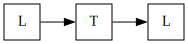

Introduction
Linear temporal logic in OCaml.
Syntax and semantics
Linear temporal logic extends propositional logic to describe truth over linear
time paths.
Formulas are given by the following grammar:
$$\varphi ::= \top \mid v \mid \neg \psi \mid \psi_1 \wedge \psi_2 \mid
\bigcirc \psi \mid \psi_1 \mathrel{\mathcal{U}} \psi_2 $$
where $v$ is a propositional variable. We interpret $\bigcirc \varphi$ as
"$\varphi$ holds in the next state" and $\psi_1
\mathrel{\mathcal{U}} \psi_2$ as "$\psi_1$ holds until $\psi_2$ is true."
Additional connectives, operators, and terms are derived from those above:
- $\bot := \neg \top$
- $\varphi \vee \psi := \neg(\neg \varphi \wedge \psi)$
- $\varphi \implies \psi := \neg \varphi \vee \psi$
- $\varphi \iff \psi := (\varphi \implies \psi) \wedge (\psi \implies
\varphi)$
- $\lozenge \varphi := \top \mathrel{\mathcal{U}} \varphi$ ("Eventual truth":
there exists a state in which $\varphi$ is true)
- $\square \varphi \equiv \neg \lozenge \neg \varphi$ ("Global truth": $\varphi$
holds in all states)
- $\varphi \mathrel{\mathcal{W}} \psi := \psi
\mathrel{\mathcal{U}}(\varphi \vee \lozenge \psi)$ ("Weak until")
- $\varphi \mathrel{\mathcal{R}} \psi := \neg(\neg \varphi
\mathrel{\mathcal{U}} \neg \psi)$ ("Release")
- $\varphi \mathrel{\mathcal{M}} \psi := \varphi
\mathrel{\mathcal{W}} (\varphi \wedge \psi)$ ("Strong release")
Formulas are evaluated over a trace — this is a possibly infinite
sequence of propositional valuations. Each valuation is a
state. The first state of a trace refers to the "start" or present
moment.
For a trace $\Sigma = \{ \Sigma_i \}_{i \in I}$, denote by $\Sigma^j := \{
\Sigma_i\}_{i \in I, i \geq j}$ the subtrace containing all states from
$\Sigma_j$ onwards. A trace's length is denoted $\left | \Sigma \right
|$.
Truth of a formula $\varphi$ is evaluated inductively via the satisfaction
relation $\models$, defined as follows:
- $\Sigma \models \top$
- $\Sigma \nvDash \bot$
- $\Sigma \models v$ iff $v = \top$ in $\Sigma_0$
- $\Sigma \models \varphi \wedge \psi$ iff $\Sigma_0 \models \varphi$ and
$\Sigma_0 \models \psi$
- $\Sigma \models \varphi \vee \psi$ iff $\Sigma_0 \models \varphi$ or
$\Sigma_0 \models \psi$
- $\Sigma \models \bigcirc \varphi$ iff $\Sigma_1 \models \varphi$ or if
$\left |\Sigma \right |=1$ with $\Sigma_0 \models \varphi$
- $\Sigma \models \square \varphi$ iff $\Sigma_j \models \varphi$ for all $j \in I$
- $\Sigma \models \varphi \mathrel{\mathcal{U}} \psi$ iff there exists $0 \leq
i \leq |\Sigma|$ with $\Sigma^i \models \psi$ and $\Sigma^j \models \varphi$ for
all $0 \leq j \leq i$
Under this definition, a formula containing no modal operators is equivalent to an
ordinary propositional formula taking values in the current state.
A more detailed description of semantics for traces of infinite length
may be found in [1].
Documentation
Module documentation is located here.
Build and Installation
Clone the repository from GitHub. LTL can be built with dune: run dune build to
compile, and dune install to install.
Development
Source code is available on GitHub. LTL is free software under the GNU GPL v3. You are
free to copy, modify, and distribute LTL under the terms of this license.
References
[1] A. Pnueli, "The temporal logic of programs," 18th Annual Symposium
on Foundations of Computer Science (sfcs 1977), Providence, RI, USA, 1977,
pp. 46-57, doi: 10.1109/SFCS.1977.32.
Back | Home
Copyright © 2023 Matthew Kukla
<matt.kukla [at] yandex.com>.